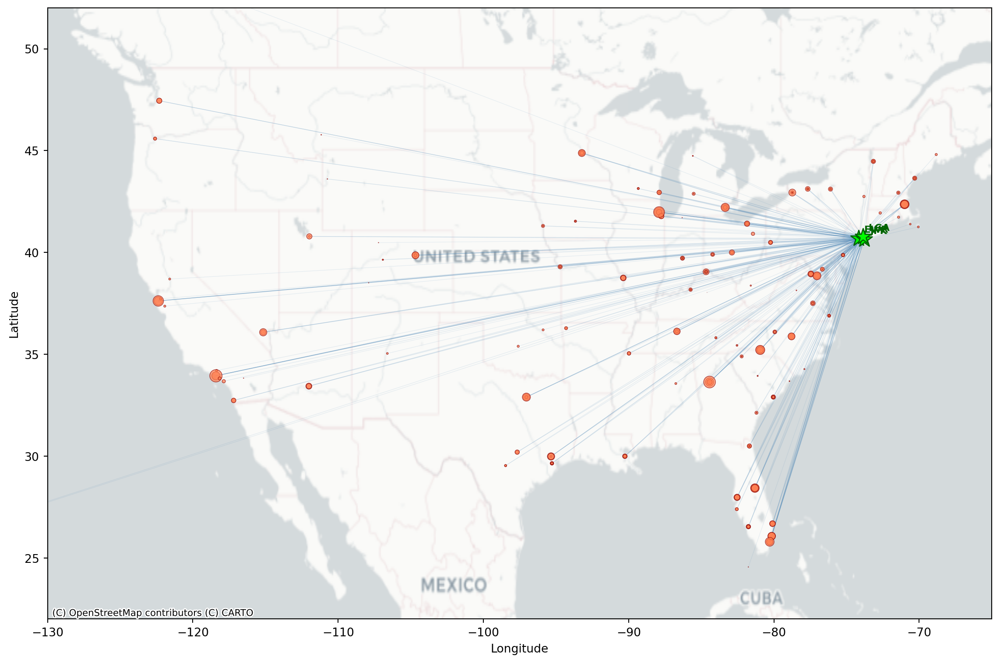
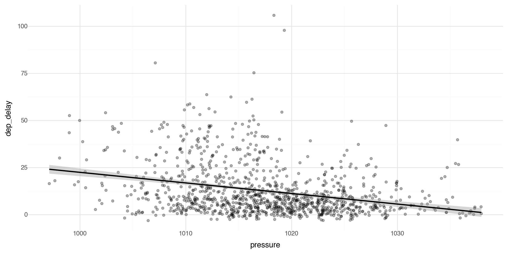
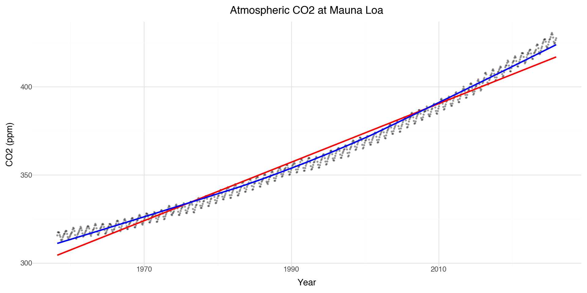
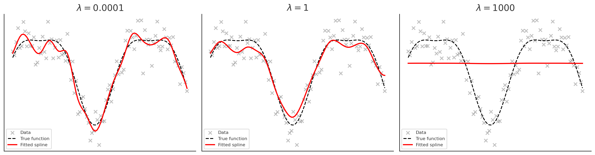

Columns: ['year', 'month', 'day', 'dep_time', 'sched_dep_time', 'dep_delay', 'arr_time', 'sched_arr_time', 'arr_delay', 'carrier', 'flight', 'tailnum', 'origin', 'dest', 'air_time', 'distance', 'hour', 'minute', 'time_hour']
Shape: (336776, 19)JSC 370: Data Science II
Week 4: More Data Visualization and ML 1
This week

This lecture presents a deeper introduction to plotnine, a Python package that implements the grammar of graphics (similar to R’s ggplot2), providing better graphics options than matplotlib’s default plots.
This week
We will also dig into non-parametric regression with splines and generalized additive models (GAMs).
A generalized additive model (GAM) predicts \(y\) by adding up learned smooth functions of the predictors:
\[ g(\mathbb{E}[Y \mid X])=\beta_0 + s_1(x_1) + s_2(x_2) + \cdots + s_p(x_p) \]
- Nonlinear: each \(s_j(\cdot)\) is a flexible curve (often a spline)
- Regularized: we control “wiggliness” with a penalty (bias–variance tradeoff)
- Fits the ML pattern: choose flexibility by minimizing training loss + complexity penalty
- Interpretable: you can plot each learned effect \(s_j(x_j)\) (partial effect curves)
- Generalized: works for continuous, binary, counts via a link \(g(\cdot)\)
- Mental model: like linear regression, but each coefficient is replaced by a smooth curve.
Background
plotnine is based on the grammar of graphics, the same underlying philosophy as R’s ggplot2. In the Python ecosystem, we use pandas for data manipulation (similar to R’s dplyr), and plotnine for visualization.
The tidyverse philosophy of readable, chainable operations translates well to Python with method chaining in pandas.
Layers, pandas and method chaining
- We should take a step back and discuss Python’s data manipulation ecosystem.
plotninebehaves very similarly topandas. They share a philosophy of readable, chainable operations.- In pandas, operations are typically chained using method calls on DataFrames.
- Each method takes a DataFrame and returns a new DataFrame.
- Method chaining in Python uses the
.operator (similar to R’s pipe). - You can also use parentheses to break long chains across multiple lines.
Flights data
To illustrate many of today’s visualization examples we will look at the flights data from the nycflights13 package. They are all flights that departed from NYC airports (JFK, LGA, EWR) in 2013.
Method chaining in Python
An example using method chaining: subset the flights data to LAX, and take the mean arrival delay times by year, month, day.
We need to start with the data,
queryor boolean indexing to filter to the desired destination (LAX),groupbyto prepare the groups that we want to aggregate over, thenaggto take the mean.
| year | month | day | arr_delay | |
|---|---|---|---|---|
| 0 | 2013 | 1 | 1 | 7.743590 |
| 1 | 2013 | 1 | 2 | -7.414634 |
| 2 | 2013 | 1 | 3 | -28.725000 |
| 3 | 2013 | 1 | 4 | -25.125000 |
| 4 | 2013 | 1 | 5 | -3.142857 |
| ... | ... | ... | ... | ... |
| 360 | 2013 | 12 | 27 | -29.957447 |
| 361 | 2013 | 12 | 28 | -15.650000 |
| 362 | 2013 | 12 | 29 | 8.355556 |
| 363 | 2013 | 12 | 30 | -6.000000 |
| 364 | 2013 | 12 | 31 | 6.230769 |
365 rows × 4 columns
Alternative syntax with pipe()
Let’s do the same thing using pandas’ pipe() method for a more functional style:
| year | month | day | arr_delay | |
|---|---|---|---|---|
| 0 | 2013 | 1 | 1 | 7.743590 |
| 1 | 2013 | 1 | 2 | -7.414634 |
| 2 | 2013 | 1 | 3 | -28.725000 |
| 3 | 2013 | 1 | 4 | -25.125000 |
| 4 | 2013 | 1 | 5 | -3.142857 |
| ... | ... | ... | ... | ... |
| 360 | 2013 | 12 | 27 | -29.957447 |
| 361 | 2013 | 12 | 28 | -15.650000 |
| 362 | 2013 | 12 | 29 | 8.355556 |
| 363 | 2013 | 12 | 30 | -6.000000 |
| 364 | 2013 | 12 | 31 | 6.230769 |
365 rows × 4 columns
A few coding style tips
- Variable names should use only lowercase letters, numbers, and _
- Use _ to separate words within a name (snake_case)
- Method chains should have each method on its own line, indented
- Wrap long chains in parentheses for cleaner formatting
- Each chained method should be indented for readability
Example:
Flights data in more detail
The nycflights13 package also provides hourly airport weather data for the three NYC airports (the origin). Let’s join the flights data with the weather data so we can look at more interesting relationships in our visualizations.
Flights data in more detail
Looks like we can join these datasets on year, month, day, hour and origin (which is the origin airport). We can examine the relationship between flight delays and weather at the origin airports (JFK, LGA, EWR).
A merge with how='left' will keep all of the observations in the left DataFrame (flights) and merge with the observations in the right DataFrame (weather at origin).
Daily flights data
Let’s make a more manageable sized dataset and summarize the data by month, day, and origin airport by taking the means of the weather variables.
agg_cols = ['dep_delay', 'arr_delay', 'temp', 'dewp', 'humid',
'wind_dir', 'wind_speed', 'wind_gust', 'precip', 'pressure', 'visib']
flights_weather_day = (flights_weather
.groupby(['year', 'month', 'day', 'origin'])
.agg({col: 'mean' for col in agg_cols})
.reset_index())
flights_weather_day.head()
print("Shape:", flights_weather_day.shape)Shape: (1095, 15)Mapping Flight Routes
The nycflights13 package also includes airport coordinates. We can merge these in with flights to map where are the popular NYC destinations.
from nycflights13 import airports
# get routes by origin (EWR, JFK, LGA) and destination, count the number of flights per
flight_routes = (flights
.groupby(['origin', 'dest'])
.size()
.reset_index(name='n_flights'))
# extract geospatial and merging info about the airports
airports[['faa', 'name', 'lat', 'lon']].head()| faa | name | lat | lon | |
|---|---|---|---|---|
| 0 | 04G | Lansdowne Airport | 41.130472 | -80.619583 |
| 1 | 06A | Moton Field Municipal Airport | 32.460572 | -85.680028 |
| 2 | 06C | Schaumburg Regional | 41.989341 | -88.101243 |
| 3 | 06N | Randall Airport | 41.431912 | -74.391561 |
| 4 | 09J | Jekyll Island Airport | 31.074472 | -81.427778 |
Flight Routes Data
Merge flight routes with geospatial information (latitude and longitude) by origin (it is the faa column in airports) and rename to have dest_lat, dest_lon along with origin_lat and origin_lon
flight_routes_geo = (flight_routes
.merge(airports[['faa', 'lat', 'lon']],
left_on='dest', right_on='faa', how='inner')
.rename(columns={'lat': 'dest_lat', 'lon': 'dest_lon'})
.drop(columns=['faa'])
.merge(airports[['faa', 'lat', 'lon']],
left_on='origin', right_on='faa', how='inner')
.rename(columns={'lat': 'origin_lat', 'lon': 'origin_lon'})
.drop(columns=['faa']))
print(f"Routes mapped: {len(flight_routes_geo)}")
flight_routes_geo.head()Routes mapped: 217| origin | dest | n_flights | dest_lat | dest_lon | origin_lat | origin_lon | |
|---|---|---|---|---|---|---|---|
| 0 | EWR | ALB | 439 | 42.748267 | -73.801692 | 40.6925 | -74.168667 |
| 1 | EWR | ANC | 8 | 61.174361 | -149.996361 | 40.6925 | -74.168667 |
| 2 | EWR | ATL | 5022 | 33.636719 | -84.428067 | 40.6925 | -74.168667 |
| 3 | EWR | AUS | 968 | 30.194528 | -97.669889 | 40.6925 | -74.168667 |
| 4 | EWR | AVL | 265 | 35.436194 | -82.541806 | 40.6925 | -74.168667 |
Flight Routes Map
Like we saw last week, we can make a basic map we can use matplotlib and contixtily (basemap).
import matplotlib.pyplot as plt
import contextily as ctx
fig, ax = plt.subplots(figsize=(12, 8))
# Set map extent
ax.set_xlim(-130, -65)
ax.set_ylim(22, 52)
# Add basemap
ctx.add_basemap(ax, crs='EPSG:4326', source=ctx.providers.CartoDB.Positron)
# Plot flight routes as lines (alpha based on number of flights)
max_flights = flight_routes_geo['n_flights'].max()
for _, row in flight_routes_geo.iterrows():
alpha = min(0.1 + 0.5 * (row['n_flights'] / max_flights), 0.6)
ax.plot([row['origin_lon'], row['dest_lon']],
[row['origin_lat'], row['dest_lat']],
color='steelblue', alpha=alpha, linewidth=0.5)
# Plot destination airports (coords of airport destinations)
ax.scatter(flight_routes_geo['dest_lon'], flight_routes_geo['dest_lat'],
s=flight_routes_geo['n_flights']/100, c='coral', alpha=0.7,
edgecolors='darkred', linewidths=0.5, label='Destinations', zorder=4)
# Plot NYC origin airports (use coords of NYC airports origin)
nyc_airports = airports[airports['faa'].isin(['JFK', 'LGA', 'EWR'])]
for _, row in nyc_airports.iterrows():
ax.scatter(row['lon'], row['lat'], s=200, c='lime', marker='*',
edgecolors='darkgreen', linewidths=1, zorder=5)
ax.annotate(row['faa'], (row['lon'], row['lat']), xytext=(5, 5),
textcoords='offset points', fontsize=8, fontweight='bold', color='darkgreen')
ax.set_xlabel('Longitude')
ax.set_ylabel('Latitude')
plt.tight_layout()
plt.show()
Basemap Options
The contextily library provides several basemap tile providers:
ctx.providers.CartoDB.Positron # light gray, minimal labels
ctx.providers.CartoDB.PositronNoLabels
ctx.providers.Stamen.TonerLite # black and white
# Terrain/satellite
ctx.providers.Stamen.Terrain # terrain with labels
ctx.providers.Esri.WorldImagery # satellite imagery
# Standard map styles
ctx.providers.OpenStreetMap.Mapnik # standard OSM
ctx.providers.CartoDB.Voyager # colorful, detailedUse crs='EPSG:4326' when your data is in latitude/longitude coordinates.
Visualizations with plotnine
plotnine is designed on the principle of adding layers.

Layers in plotnine
- With
plotninea plot is initiated with the functionggplot() - The first argument of
ggplot()is the dataset to use in the graph - We add aesthetics using
aes() - The
aes()mapping takes the x and y axes of the plot - Layers are added to
ggplot()with+ - Layers include
geom_functions such as point, lines, etc.
Basic scatterplot
The first argument of ggplot() is the dataset to use, then the aesthetics. With the + you add one or more layers.

As expected, we see that if a flight has a late departure, it has a late arrival.
Another basic scatterplot
We can see if there is a relationship between departure delays and pressure (low pressure means clouds and precipitation, high pressure means better weather).
Controlling transparency using “alpha”
The alpha control can go in the layer that you are plotting, for example in the geom_point(alpha = ) layer we can directly control the transparency of the points (0 is fully transparent, 1 is fully opaque).
Adding labels and themes
You can make nicer axes and add titles with the labs layer
Also showing a minimal theme that removes the background grey theme_bw() (has a plot border) or theme_minimal() (no plot border, lighter and sparser grid lines)
Coloring by a variable - using aesthetics
You can convey information about your data by mapping the aesthetics in your plot to the variables in your dataset. For example, you can map the colors of your points to the origin variable to reveal groupings.
plotnine chooses colors, and adds a legend, automatically.

Coloring by a variable - using aesthetics
Note when there are a lot of classes or groups, the coloring is not distinguished well.
This is generally bad practice.
Coloring by a variable - using aesthetics
Too many points? Take a random sample and plot again.
Points shape
By default plotnine uses up to 6 shapes with shape= in the aes() aesthetics. If there are more, some of your data is not plotted!! (At least it warns you.)
Manual control of aesthetics
If we control aesthetics manually in the layer such as geom_point() (i.e. outside aes()), they become fixed constants for that geom, not variables mapped from the data.
One more important detail in plotnine: if you write aes(color='blue'), that’s a mapping (to the literal string “blue”), not a fixed aesthetic, so you’ll often get an odd legend. Fixed values should be outside aes(), but coloring by a variable (such as a group) should be inside aes().
Summary of aesthetics
The various aesthetics of aes:
| Code | Description |
|---|---|
| x | position on x-axis |
| y | position on y-axis |
| shape | shape |
| color | color of element borders |
| fill | color inside elements |
| size | size |
| alpha | transparency |
| linetype | type of line |
Facets 1
Facets are particularly useful for categorical variables:
Facets 2
Or you can facet on two variables:

Note this plot is probably too large and busy for practical use, but it gives you the idea what is possible with faceting.
Geometric Objects 1
Geometric objects are used to control the type of plot you draw. Let’s plot a smoothed line fitted to the scatterplot data between pressure and departure delay.

Geometric Objects 2
Note that not every aesthetic works with every geom function.
For example, linetype is an aesthetic mapping that controls the pattern used to draw lines (solid, dashed, dotted, etc.).
Geoms - Reference
plotnine provides many geoms, mirroring ggplot2’s functionality. See https://plotnine.readthedocs.io/ for documentation.
Here is a nice plotnine guide
And cheatsheet (front) and cheatsheet (back)

Multiple Geoms 1
To display multiple geoms in the same plot, add multiple geom functions to ggplot(), for example geom_point and geom_smooth

Multiple Geoms 2
If you place mappings in a geom function, plotnine will use these mappings to extend or overwrite the global mappings for that layer only. This makes it possible to display different aesthetics in different layers.

Multiple Geoms 3
You can use the same idea to specify different data for each layer. Here, our smooth line displays just a subset of the dataset, the flights departing from JFK. The local data argument in geom_smooth() overrides the global data argument in ggplot() for that layer only.
Multiple Geoms 4
We can layer the points with geom_point and error bars on the geom_smooth.
We can add color and linetype by origin airport.
Statistical Transformations - e.g. Bar charts
Let’s make a bar chart of the number of flights at each origin airport in 2013. The algorithm uses a built-in statistical transformation, called a “stat”, to calculate the counts.
Bar charts 2
You can override the statistic a geom uses to construct its plot. e.g., if we want to plot proportions, rather than counts:
Coloring barcharts
You can color a bar chart using either the color aesthetic (only does the outline), or, more usefully, fill:
Coloring barcharts
More interestingly, you can fill by another variable. Let’s first subset our data to look at the destination airports with a lot of flights (more than 10,000 flights)
Coloring barcharts
The position='dodge' places overlapping objects directly beside one another. This makes it easier to compare individual values.
Statistical transformations - another example
You might want to draw greater attention to the statistical transformation in your code. For example, you might use stat_summary(), which summarizes the y values for each unique x value.
Here we plot the median delay with IQR (25th-75th quantiles) as bars.
Coordinate systems
Coordinate systems are one of the more complicated corners of plotnine. To start with something simple, here’s how to flip axes:

Coordinate flip the statistical transformation plot
Coordinate flip on barplot
Let’s look at the top destinations from the NYC airports
# Aggregate by destination
top_dests = (flight_routes
.groupby('dest')['n_flights']
.sum()
.sort_values(ascending=False)
.head(15)
.reset_index())
(ggplot(top_dests, aes(x='reorder(dest, n_flights)', y='n_flights')) +
geom_bar(stat='identity', fill='steelblue') +
coord_flip() +
labs(x='Destination', y='Number of Flights',
title='Top 15 Destinations from NYC') +
theme_minimal())
Coordinate systems
The “easy” ones you’ll use a lot
coord_flip() swaps x and y after the plot is built. Great for boxplots/bar charts to make labels readable.
coord_cartesian(xlim=..., ylim=...) zooms without dropping data (unlike hard limits on scales).
coord_fixed(ratio=1) forces equal aspect ratio (useful for geometry or maps).
Where it gets tricky
Stats + coords interactions: some geoms/stats compute first, then coords transform. Most of the time that’s fine, but it can surprise you when you expect “compute in the new coordinate system.”
Limits behavior:
scale_*_continuous(limits=...)can drop data before statistics are computed.coord_cartesian(...)usually keeps the data and just zooms the view.- Non-Cartesian coords (if you use them): e.g.,
coord_polar()changes the whole geometry, so not every plot makes sense there.
Color ramps
If you add a continuous variable in your color aesthetic, it will create a color ramp. Here we apply color with the variable temp.
Color palettes
You can define your own color ramp or use one of the palettes. Here we manually change the color palette with scale_color_gradient.
Color palettes
You can get as detailed as you would like for the color ramp.
Summary: R to Python Translation
For those of you who have used tidyverse and ggplot in R and want to compare to Python’s pandas/plotnine:
| R (tidyverse/ggplot2) | Python (pandas/plotnine) |
|---|---|
library(ggplot2) |
from plotnine import * |
%>% or |> |
Method chaining with . |
filter() |
.query() or boolean indexing |
group_by() |
.groupby() |
summarize() |
.agg() |
left_join() |
pd.merge(how='left') |
aes(x = var) |
aes(x='var') |
Smooth Regression and GAMs
What is geom_smooth() actually doing?
When we use geom_smooth() in plotnine, we’re fitting a smooth regression line to our data.
- By default,
geom_smooth()uses LOWESS (Locally Weighted Scatterplot Smoothing) for small datasets - For larger datasets, it uses a GAM (Generalized Additive Model)
- The smooth line adapts to the local structure of the data
This raises a question: How do we model non-linear relationships?
The Problem with Linear Models
As we know, a linear model tries to fit the best straight line through the data.
\[y = \beta_0 + \beta_1 x + \epsilon\]
- This works well when the relationship is actually linear
- But many real-world relationships are non-linear
- Forcing a straight line through curved data gives poor predictions
Motivating Example: CO₂ Data
Let’s look at atmospheric CO\(_2\) measurements from Mauna Loa, Hawaii (collected since 1958).
| year | month | decimal date | co2 | deseasonalized | ndays | sdev | unc | month_year | |
|---|---|---|---|---|---|---|---|---|---|
| 0 | 1958 | 3 | 1958.2027 | 315.71 | 314.44 | -1 | -9.99 | -0.99 | 1958-03-01 |
| 1 | 1958 | 4 | 1958.2877 | 317.45 | 315.16 | -1 | -9.99 | -0.99 | 1958-04-01 |
| 2 | 1958 | 5 | 1958.3699 | 317.51 | 314.69 | -1 | -9.99 | -0.99 | 1958-05-01 |
| 3 | 1958 | 6 | 1958.4548 | 317.27 | 315.15 | -1 | -9.99 | -0.99 | 1958-06-01 |
| 4 | 1958 | 7 | 1958.5370 | 315.87 | 315.20 | -1 | -9.99 | -0.99 | 1958-07-01 |
Linear vs Smooth Fit

The linear model misses the curvature and seasonal cycles!
Zooming in: 2025 Data

The smooth line captures the seasonal pattern that the linear model completely misses.
Polynomial Regression: A First Attempt
One approach to modeling non-linearity is polynomial regression:
\[y = \beta_0 + \beta_1 x + \beta_2 x^2 + \beta_3 x^3 + \ldots + \epsilon\]
from sklearn.preprocessing import PolynomialFeatures
from sklearn.linear_model import LinearRegression
# Fit polynomial regression (degree 3)
X = co2_2025[['month']].values
y = co2_2025['co2'].values
poly = PolynomialFeatures(degree=3)
X_poly = poly.fit_transform(X)
model = LinearRegression().fit(X_poly, y)
co2_2025['poly_pred'] = model.predict(X_poly)
print(f"Coefficients: {model.intercept_:.2f} + {model.coef_[1]:.2f}x + {model.coef_[2]:.2f}x² + {model.coef_[3]:.2f}x³")Coefficients: 421.40 + 5.00x + -0.90x² + 0.04x³Polynomial Fit Visualization
Problems with Polynomial Regression
- Global behavior: Changing one coefficient affects the entire curve
- Instability at boundaries: Polynomials can behave wildly at the edges (Runge’s phenomenon)
- Poor extrapolation: Predictions outside the data range are unreliable
- Choice of degree: How do we choose the right polynomial degree?
We need something more flexible and local. This motivates using splines.
Why Splines?
- Polynomial regression: models non-linearity but has global effects
- Splines: model structure in the mean function using piecewise polynomials
General setup:
\[y = f(x) + \epsilon, \quad \epsilon \sim N(0, \sigma^2 I)\]
- Goal: estimate a smooth function \(f(x)\) that captures the trend
- Benefits:
- Flexible, nonparametric modeling of trends
- Still yields prediction errors (statistical smoothing)
- Naturally extended to generalized additive models (GAMs)
Basis Functions: Intuition
A basis is a set of simple functions \(\{b_j(x)\}\) that can be combined (with coefficients \(\beta_j\)) to approximate more complex functions \(f(x)\):
\[f(x) = \sum_{j=1}^k \beta_j b_j(x)\]
Example: polynomial basis \(b_1(x) = 1, \quad b_2(x) = x, \quad b_3(x) = x^2, \ldots\)
Analogy: like combining Lego blocks to build different shapes — basis functions are the blocks, coefficients \(\beta_j\) are how much of each block we use
The regression coefficients \(\beta_j\) control the contribution of each basis function
Basis Functions: Polynomial Example
Represent a complicated function \(f(x)\) as a linear combination of simpler basis functions:
\[f(x) = \sum_{j=1}^k \beta_j b_j(x)\]
Example: polynomial basis in 1-D:
\[y_i = \beta_0 + \beta_1 x_i + \beta_2 x_i^2 + \beta_3 x_i^3 + \beta_4 x_i^4 + \epsilon_i\]
Basis functions:
\[b_1(x) = 1, \quad b_2(x) = x, \quad b_3(x) = x^2, \quad b_4(x) = x^3, \quad b_5(x) = x^4\]
Basis Functions: Matrix Form
Collect basis functions into a basis matrix \(\mathbf{B}\):
\[\mathbf{f} = \mathbf{B}\boldsymbol{\beta}\]
Example (polynomial basis):
\[\begin{bmatrix} f(x_1) \\ f(x_2) \\ \vdots \\ f(x_n) \end{bmatrix} = \begin{bmatrix} 1 & x_1 & x_1^2 & x_1^3 & x_1^4 \\ 1 & x_2 & x_2^2 & x_2^3 & x_2^4 \\ \vdots & \vdots & \vdots & \vdots & \vdots \\ 1 & x_n & x_n^2 & x_n^3 & x_n^4 \end{bmatrix} \begin{bmatrix} \beta_0 \\ \beta_1 \\ \beta_2 \\ \beta_3 \\ \beta_4 \end{bmatrix}\]
Polynomial Basis Visualization

The basis functions are each multiplied by \(\beta_j\) and then summed to give the final curve \(f(x)\).
Polynomial Basis: CO₂ Example
Monthly CO₂ data fit with a polynomial basis, each colored curve is a basis function scaled by its coefficient.
Polynomial Basis Recap
- A function \(f(x)\) can be written as a weighted sum of polynomial basis functions:
\[f(x) = \sum_{j=0}^p \beta_j x^j\]
The coefficients \(\beta_j\) control the shape of the curve
Polynomials provide flexibility, but they can behave poorly:
- High-order polynomials become unstable (“wiggly”)
- Poor fit near boundaries (Runge’s phenomenon)
This motivates using splines: piecewise polynomials joined smoothly at knots
Splines: Concepts & Types
A spline is a function made up of piecewise polynomials:
- Defined between knots (points where polynomial pieces join)
- Joined smoothly (continuous first and second derivatives)
Advantages over high-order polynomials:
- Flexible but stable (avoids oscillations at boundaries)
- Local control: changing one knot only affects the nearby region
General form:
\[f(x) = \sum_{j=1}^K \beta_j b_j(x), \quad \text{where } b_j(x) \text{ are spline basis functions}\]
Types of Splines
- Cubic splines: piecewise cubic polynomials joined smoothly
- Natural splines: cubic splines with linear constraints at the boundaries (reduces edge wiggles)
- B-splines: basis representation of splines using local polynomial pieces
- Smoothing splines: knots at every observation, with a penalty \(\lambda\) to control wiggliness
- Cyclic splines: cubic splines with connected ends (for periodic data like seasons)
Cubic Splines Example

Choosing the number and placement of knots controls smoothness:
- Few knots \(\rightarrow\) smoother curve
- Many knots \(\rightarrow\) wiggly curve
Visualizing B-spline Basis Functions
from scipy.interpolate import BSpline
# Create B-spline basis functions
x = np.linspace(0, 1, 100)
knots = [0, 0, 0, 0, 0.25, 0.5, 0.75, 1, 1, 1, 1]
degree = 3
basis_df = pd.DataFrame({'x': x})
for i in range(len(knots) - degree - 1):
coeffs = np.zeros(len(knots) - degree - 1)
coeffs[i] = 1
spline = BSpline(knots, coeffs, degree)
basis_df[f'B{i}'] = spline(x)
basis_long = basis_df.melt(id_vars='x', var_name='basis', value_name='y')
(ggplot(basis_long, aes(x='x', y='y', color='basis')) +
geom_line(size=1) +
labs(x='x', y='Basis function value',
title='B-spline Basis Functions (degree 3)') +
theme_minimal())
Each B-spline basis function is non-zero only over a limited range — this gives local control.
Smoothing Splines: Concept
Goal: Fit a smooth curve \(f(x)\) through noisy data \((x_i, y_i)\).
We want to balance:
- Goodness of fit: match the data closely
- Smoothness: avoid overly wiggly functions
Define an objective function:
\[\text{RSS}(f) + \lambda J(f)\]
where:
\[\text{RSS}(f) = \sum_i (y_i - f(x_i))^2, \quad J(f) = \int (f''(x))^2 \, dx\]
- \(\lambda \geq 0\) is the smoothness parameter
- Small \(\lambda\): fit the data very closely (wiggly curve)
- Large \(\lambda\): force \(f\) to be smoother (nearly linear)
Smoothing Splines: Optimization
We minimize the penalized residual sum of squares:
\[\min_f \left\{ \sum_i (y_i - f(x_i))^2 + \lambda \int (f''(x))^2 \, dx \right\}\]
This is a trade-off between:
- \(\sum_i (y_i - f(x_i))^2\) = data fidelity (how well the curve fits the observed points)
- \(\int (f''(x))^2 \, dx\) = roughness penalty (penalizes curvature/wiggliness)
Solution: a natural cubic spline with knots at each unique \(x_i\).
The “best” curve is obtained by penalizing the wiggliness of the spline.
Smoothing Splines: Basis Representation
Represent \(f(x)\) using spline basis functions:
\[f(x) = \sum_{j=1}^K \beta_j b_j(x)\]
Let \(\mathbf{B}\) be the basis matrix and \(\mathbf{S}\) be the penalty matrix:
\[B_{ij} = b_j(x_i), \quad S_{jk} = \int b_j''(x) \, b_k''(x) \, dx\]
The optimization problem becomes:
\[\min_\beta \; (\mathbf{y} - \mathbf{B}\boldsymbol{\beta})^\top (\mathbf{y} - \mathbf{B}\boldsymbol{\beta}) + \lambda \boldsymbol{\beta}^\top \mathbf{S} \boldsymbol{\beta}\]
Solution (penalized least squares):
\[\hat{\boldsymbol{\beta}} = (\mathbf{B}^\top \mathbf{B} + \lambda \mathbf{S})^{-1} \mathbf{B}^\top \mathbf{y}\]
Smoothing Splines: CO₂ Example
A smoothing spline fit to the CO₂ data captures both the long-term trend and seasonal cycles.
Effect of the Smoothing Parameter \(\lambda\)
- Left (\(\lambda\) very small = 1e-4): spline is very wiggly, almost interpolates the noise
- Middle (\(\lambda = 1\)): good balance between smoothness and fit
- Right (\(\lambda\) very large = 1000): curve is almost straight (linear trend)
Knots vs. Penalty Parameter \(\lambda\)
In smoothing splines:
- A knot is placed at each observation \(x_i\)
- This gives the spline the potential to fit the data exactly
The penalty parameter \(\lambda\) controls how much we use that flexibility:
- \(\lambda \to 0\): little penalty → spline interpolates the data (very wiggly)
- \(\lambda \to \infty\): heavy penalty → spline approaches a straight line
Interpretation:
- Knots: define the “vocabulary” of possible wiggles
- \(\lambda\): decides how much of that vocabulary is actually used
Knots vs. \(\lambda\): Visualization

- Small \(\lambda\): all knots are active (blue), spline wiggles to fit data closely
- Moderate \(\lambda\): only some knots are active, others are suppressed (grey), leading to a smoother curve
- Large \(\lambda\): only a few key knots remain active, spline is very smooth
Types of 1-D Splines: Summary
| Type | Description |
|---|---|
| Cubic splines | Piecewise cubic polynomials with smooth joins at knots |
| Natural cubic splines | Cubic splines with boundary constraints (linear tails beyond boundary knots) |
| Periodic/Cyclic splines | Enforce wrap-around continuity (function and derivatives match at endpoints) |
| B-splines | A numerically stable basis representation for polynomial splines (local support) |
| Regression splines | Finite set of knots; fit spline coefficients by least squares |
| Smoothing/penalized splines | Knots at every point, add a roughness penalty \(\lambda\) to control fit-smoothness |
| Cardinal splines | Knot placement is always a certain distance apart (common in grid settings) |
From Splines to GAMs
A Generalized Additive Model (GAM) extends splines to multiple predictors. It is a regression model where predictors enter through a spline. GAMs can have a combination of splines and linear terms.
\[y = \beta_0 + s_1(x_1) + s_2(x_2) + \ldots + s_p(x_p) + \epsilon\]
Where each \(s_j(x_j)\) is a smooth function (typically a penalized cubic spline) of predictor \(x_j\).
Key advantages:
- Each predictor can have its own non-linear relationship with the response
- The effects are additive — total effect is the sum of individual smooth effects
- Automatic smoothness selection — each \(s_j\) has its own penalty \(\lambda_j\)
- Interpretable — you can plot each \(s_j(x_j)\) to see how predictor \(j\) affects \(y\)
GAMs in Python
In Python, we can fit GAMs using statsmodels or pygam.
Here we use pygam function LinearGAM
Read more here
GAM Summary
LinearGAM
=============================================== ==========================================================
Distribution: NormalDist Effective DoF: 4.0838
Link Function: IdentityLink Log Likelihood: -13.6117
Number of Samples: 12 AIC: 37.3911
AICc: 47.847
GCV: 1.9142
Scale: 0.8918
Pseudo R-Squared: 0.847
==========================================================================================================
Feature Function Lambda Rank EDoF P > x Sig. Code
================================= ==================== ============ ============ ============ ============
s(0) [0.6] 10 4.1 1.45e-02 *
intercept 1 0.0 1.11e-16 ***
==========================================================================================================
Significance codes: 0 '***' 0.001 '**' 0.01 '*' 0.05 '.' 0.1 ' ' 1
WARNING: Fitting splines and a linear function to a feature introduces a model identifiability problem
which can cause p-values to appear significant when they are not.
WARNING: p-values calculated in this manner behave correctly for un-penalized models or models with
known smoothing parameters, but when smoothing parameters have been estimated, the p-values
are typically lower than they should be, meaning that the tests reject the null too readily.
s(0) + intercept
[ 36.58068341 38.26196477 39.94449927 41.23700237 40.90631244
38.83656747 36.99855708 37.08258697 38.46904898 40.03810926
388.35533059]Interpreting GAM Summary
In pygam output:
s(k)represents a smooth function of predictor column k in your X matrixf(k)represents a factor/categorical term (discrete levels)
Note on notation: In pygam, s() denotes smooth terms. This matches our mathematical notation \(s_j(x_j)\) for GAM smooth functions.
EDoF (effective degrees of freedom) tells you “what shape did the model learn?”
- edf \(\approx\) 1: the term is essentially linear (heavily penalized)
- edf 2–4: mild curvature
- edf large: more wiggle/complexity (less penalized)
Lambda (\(\lambda\)) is the smoothing penalty — larger values = smoother curves
Interpreting GAM Coefficients
The output of gam.coef_[:] gives us the rank 10 spline basis weights (for s(0)): 36.58, 38.26, 39.94, 41.24, 40.91, 38.84, 37.00, 37.08, 38.47, 40.04
These are the beta weights \[s(x) = \sum_{j=1}^{10} \beta_j B_j(x)\]
And the intercept: 388.35533059
So the prediction is \(\hat{y} = \beta_0 + s(x)\) and the individual \(\beta_j\) values are usually not interpretable by themselves; the interpretable object is the curve \(s(x)\).
GAM Predictions

{kind=link}
{kind=link}
Fitting GAM to Full Dataset
Let’s fit a GAM to capture both the long-term trend and seasonal cycles:
LinearGAM
=============================================== ==========================================================
Distribution: NormalDist Effective DoF: 21.573
Link Function: IdentityLink Log Likelihood: -502.9597
Number of Samples: 814 AIC: 1051.0655
AICc: 1052.4119
GCV: 0.2172
Scale: 0.4548
Pseudo R-Squared: 0.9998
==========================================================================================================
Feature Function Lambda Rank EDoF P > x Sig. Code
================================= ==================== ============ ============ ============ ============
s(0) [0.6] 20 14.0 1.11e-16 ***
s(1) [0.6] 12 7.6 1.11e-16 ***
intercept 1 0.0 1.11e-16 ***
==========================================================================================================
Significance codes: 0 '***' 0.001 '**' 0.01 '*' 0.05 '.' 0.1 ' ' 1
WARNING: Fitting splines and a linear function to a feature introduces a model identifiability problem
which can cause p-values to appear significant when they are not.
WARNING: p-values calculated in this manner behave correctly for un-penalized models or models with
known smoothing parameters, but when smoothing parameters have been estimated, the p-values
are typically lower than they should be, meaning that the tests reject the null too readily.
NoneFull GAM Visualization
Partial Effects
GAMs allow us to visualize each smooth term separately:
fig, axes = plt.subplots(1, 2, figsize=(12, 4))
# Plot partial effect of decimal.date (long-term trend)
XX = gam_full.generate_X_grid(term=0, n=100)
axes[0].plot(XX[:, 0], gam_full.partial_dependence(term=0, X=XX))
axes[0].set_xlabel('Year')
axes[0].set_ylabel('Partial Effect')
axes[0].set_title('Long-term Trend')
# Plot partial effect of month (seasonal)
XX = gam_full.generate_X_grid(term=1, n=12)
axes[1].plot(XX[:, 1], gam_full.partial_dependence(term=1, X=XX))
axes[1].set_xlabel('Month')
axes[1].set_ylabel('Partial Effect')
axes[1].set_title('Seasonal Effect')
plt.tight_layout()
plt.show()
Connecting geom_smooth() to GAMs
When you use geom_smooth() in plotnine:
- It’s using similar smoothing techniques under the hood
- The
methodparameter controls the smoothing approach:'lm': Linear regression'lowess': Local regression (default for small data)'gam': Generalized Additive Model (R’s ggplot2)
- The smooth adapts to your data automatically
Key GAM Concepts
| Concept | Description |
|---|---|
| Spline | Piecewise polynomial with smooth connections |
| Knots | Points where polynomial pieces connect |
| Basis functions \(b_j(x)\) | Building blocks combined to form the smooth |
| Penalization (\(\lambda\)) | Controls wiggliness, prevents overfitting |
| EDF | Effective degrees of freedom (complexity measure) |
Notation convention:
- \(f(x) = \sum_j \beta_j b_j(x)\): a spline (smooth function built from basis functions)
- \(s_j(x_j)\): smooth term for predictor \(x_j\) in a GAM
When to Use GAMs
GAMs are useful when:
- You expect non-linear relationships but don’t know the exact form
- You want interpretable models (can visualize each smooth)
- You have enough data to estimate smooth functions reliably
- You want to capture seasonal patterns or trends
Cautions:
- GAMs can overfit with too many knots
- Higher EDF = more complex model = potential overfitting
- Always validate on held-out data!
Summary: Smooth Regression
- Linear models assume straight-line relationships: \(y = \beta_0 + \beta_1 x\)
- Polynomial regression allows curves but has global effects and boundary issues
- Splines \(f(x) = \sum_j \beta_j b_j(x)\) are piecewise polynomials joined at knots
- Smoothing parameter \(\lambda\) controls the bias-variance tradeoff
- GAMs model each predictor flexibly: \(y = \beta_0 + s_1(x_1) + \ldots + s_p(x_p)\)
geom_smooth()uses these techniques under the hood- In Python: use
pygamorstatsmodelsfor GAM fitting (pygamshown today)
Python Libraries for GAMs
| Library | Description |
|---|---|
pygam |
Pure Python GAM implementation, easy to use |
statsmodels |
GLMGam class for GAMs |
scikit-learn |
Spline transformers for feature engineering |
scipy |
Low-level spline interpolation |
References
- Wood, S.N. (2017). Generalized Additive Models: An Introduction with R
- Hastie, T. & Tibshirani, R. (1990). Generalized Additive Models
- pygam documentation: https://pygam.readthedocs.io/
- plotnine documentation: https://plotnine.readthedocs.io/